The Two Handed Backhand:¶
Hand and Arm Rotation
John Yandell
In the article on the 4 variations in the modern two-handed backhand, we saw how the hands and arms are configured with different grip combinations and in different hitting shapes. (Click Here.) We also saw that there was a difference between the men and the women. Most of the men hit with a somewhat stronger grip with the bottom hand, and come through with the back arm straight. The women hit with the rear arm bent, a hitting arm position similar to the forehand. In general the grips held by the women were somewhat weaker. In the extreme case, Venus Williams, for example, this can somewhere in between a continental and eastern forehand.
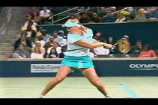
The role of hand and arm rotation on the two-hander is unrecognized and misunderstood.
The Role of Rotation
Now let's look at the rotation of the hands and arms, another important and interrelated element on the two-hander. One of the most widely misunderstood elements on the two-hander is the common tendency of top players to drop the racket head at an angle well below the ball at the start of the forward swing.
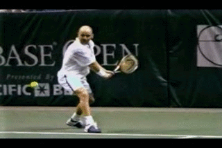
What is happening when the racket tip points down at the start of the forward swing?
Over the last few years, I've received a lot of emails from players and coaches trying to figure out why this happens. I've heard a lot of explanations. Players are "cocking their wrists," in order to "snap" them later on. Or they are "closing the racket face" to generate topspin. The high speed video shows that neither of these is a correct description. What the players are really doing is increasing the amount of hand and arm rotation in the stroke.
The video from Advanced Tennis shows is that when the top players drop the tip of the racket, they are rotating their hands and arms slightly backwards, unsually as a unit. When the hands and arms rotate backwards, the angle of the racket naturally changes, tilting downward and pointing at the court at an angle. When they swing forward to the ball from this position, the forward rotation of the hands and arms is automatically increased. The purpose of the backwards rotation is to increase the forward rotation. The end result is more racket head speed, more spin, and probably, more ball speed as well. Interestingly, this is one technical element used at various times by most of the top men and women despite the other significant differences in their stroke patterns.
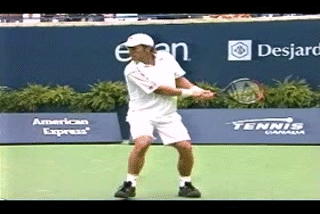
Watch how the hand and arms rotate slightly backward, then forward to the hit.
Forehand Comparison
On the forehand, the rotation of the hand and arm is commonly called the "windshield wiper." The player rotates the hand, and this is turn rotates the face of the racket. To do this the forearm and upper arm rotate as well.(Click Here.)
This same biomechanical movement pattern explains what happens when the two-handers drop the racket head so far below the ball. Dropping the racket head by turning the hands and arms backwards allows them more forward rotation.
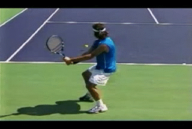
The rotation of the hands and arms occurs across all the hitting arm combinations.
The difference is that on the forehand, the rotation is more visible in the finish with the racket face turning over. On the two-handers it's more visible in the backswing because of where the racket tip points. On the forehand, most players come to the ball with the racket head only slightly below the ball. On the two-hander, if we look at the angle of the racket at the completion of the backwards rotation, we can see the tip of the racket can point down at the court at an angle up to 60 or even more. This places the racket head further below the contact point at the start of the forward swing.
This difference in the way the rotation looks between the forehand and the two-handed backhand has to do with the differences in the grips. In general, two-handers have much more conservative grip structures. Pro forehands, with a few notable exceptions, are predominantly some version of a semi-western grip. But on the two-hander, the bottom hand can hold the racket with anything from a mild continental, to an old style eastern forehand, to an eastern backhand. The top or left hand is typically in some version of an eastern forehand grip, but this also can vary slightly in either direction, toward a mild continental, or toward a mild semi-western. So these various grip structures are much less extreme than most modern forehands, and this accounts for how the rotation works.
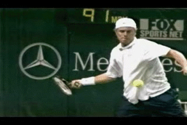
Compared to pro semi-western forehands, the racket is further below the ball on the two-hander.
With the more extreme forehand grips, we saw that the players' forearms are already naturally rotated backwards in the way the players hold the racket. This is a function of the way the hand slides under the handle. With a westernized forehand grip, the palm of the hand and underside of the forearm already point partially or mostly upward at the sky. The player doesn't have to tilt the racket down to achieve this position with the forearm turned back. (Click Here to read more about how this works on the forehand.) As the players swing through the shot, the hand and arm rotate forward as a unit. This is the "windshield wiper." There can as much as 200 degrees or more of hand, arm and racket rotation on the forward swing. But due to the position of the hand on the racket handle, the tip of the racket still points primarily straight back or is tilted only slightly down at the start of the forward swing.
With the more conservative grips on the two-hander, the natural position of the forearm is more on edge or straight up and down, so that the underside of the forearm pointing more forward toward the net and less upward. To get the underside of the forearm pointing more upward, two handers have to rotate the hands and racket backwards. This is what causes the tip of the racket to point downward at a more severe angle that the forehand. This is also the move that has caused so much confusion in coaching.
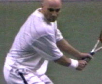
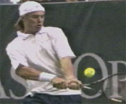
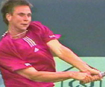
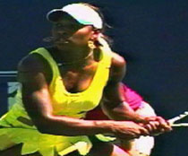
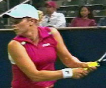
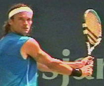
The bottom hand is usually in some version of a continental or mild eastern backhand. The top hand can verge on a mild continental or range from eastern to mild semi-western.
The key to understanding this move is to look at the back arm as the racket drops. It's subtle and happens in a fraction of a second, only a few frames even in the high speed video. This is what makes it so tough to understand. Watch in the animations how the rear arm rotates as a unit. As the racket tip drops, the forearm turns upward so that the underside points more toward the sky. If the player has already set up the back arm hitting position with the elbow in and the wrist laid back, this hitting arm position tends to stay the same during the backward arm rotation. If they haven't, they tend to find this position at the completion of this backward motion.
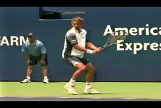
The backward rotation of the hands and arms takes only a few frames even in high speed video.
It's also important to note that the way the angle of the racket head drops has nothing to do with "wrist action" in the forward swing. There are 4 major combinations of possible arm positions. But in all four, the players set up the correct hitting arm position at the start of the forward swing, hit with the wrist of the rear arm laid back at contact, and maintain this position well out into the followthrough.
When players try to "drop the racket head" without paying attention to the configuration of the hitting arm positions, they get into major technical problems. They end up destroying the correct hitting arm position by straightening their arms too much or turning their forearms the wrong way. This is another misperception--the backward hand and arm rotation is not about "closing the face." No top two-handed player that I have filmed turns the racket face completely down. If you look at the angle of the racket face at the start of the forward swing, you can see that it is usually close to on edge, or closed a few degrees at most.
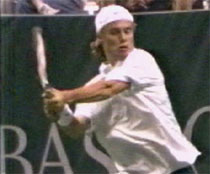
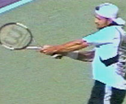
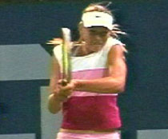
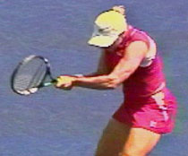
Note the rear hitting arm with the wrist laid back after contact.
Unfortunately too many junior players (and coaches) believe that the racket face should close all the way.
The common belief that you have to close the racket face for topspin on the two hander actually limits the amount of hand and arm rotation. It probably also slows down the racket head. The closed face forces players to rotate their forearms in the wrong direction. If you look at the animation of the junior player, you can see that the underside of her forearm is actually pointed down at the court as the racket starts forward. Now she has to rotate her hands back the opposite way, just to get the racket vertical. Watch how her rear arm jams into her side to make this happen.
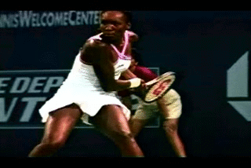
Venus demonstrates extreme backward rotation with the racket 60 degrees to the court or maybe more.
Now that we have identified how the rotation works, it's important to put this factor in context with the overall biomechanics of the two-hander. Yes, the hand and arm rotation definitely happens. And it's something that most of the top players do to some extent most of the time. For some players it's much more pronounced on more balls, with the tilt commonly reaching 60 degress. On the men's side we all recognize this move in the backhand of Andre Agassi, who has two straight hitting arms. It's probably the most extreme in some of the women's players who hit with both arms bent Venus or Vera Zvonareva, for example. Both of them have great backhands.
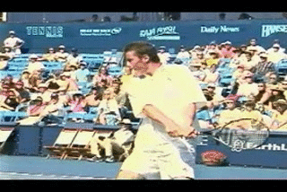
Two of the best backhands in tennis: Safin and Thomas Johannson have the least backward rotation.
For most players it's much less extreme or even minimal. The fact is that most two-handers don't rotate the tip of the racket back in an extreme fashion on most balls. This includes some of the best men's two-handers in the game, players like Marat Safin, Nicholas Kiefer, and Thomas Johannson. It also includes some of the top women, such as Lindsay Davenport and Maria Sharapova. On the majority of balls they all hit with less downward tilt, usually around 30 degrees or less. Still other players seem to vary the hand and arm rotation more from ball to ball, and can be at either extreme or somewhere in between. Juan Carlos Ferrero and Carlos Moya are two examples here.
So hand and arm rotation is not a constant. It's a variable. In terms of developing your own two-hander and certainly in teaching the two-hander, this is very important to understand. As the above discussion clearly shows, the amount of hand and arm rotation doesn't seem to be related to grip style or even the four combinations of hitting arm positions. It's a factor two-handed players with any technical style can use to a greater or lesser degree, depending on the circumstances.
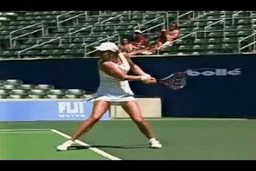
Some of the top women also have minimal racket drop and backward rotation.
The Finish
We noted above that the difference compared with the forehand was that the two handers rotated the hands backwards at the start of the foreswing, whereas we saw the rotation in the forehands during the followthrough.
In general, the finish on the two hander is more vertical, and we have seen that two-handers tend to all have similar finishes. This is regardless of hitting arm position. Most players finish with the racket basically on edge, or vertical, on most balls. The wrists are at about eye level, with the elbows bent.
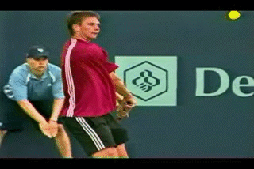
Some two handers "windshield wiper" some finishes.
But there is also a developing trend for two-handers to rotate through the finish and actually turn the face of the racket over in the followthrough, similar to the more extreme forehands. If you look at a lot of footage you can find examples of the "wiper" finish on the two hander as well. Just check out the Juan Carlos Ferrrero animation!
Again this tendency to windshield wiper the finish seems to exist across the 4 variations in hitting arm positions. You see Kim Clijsters finish quite a few balls with the face somewhat turned over. You see it in men who hit with the front arm bent and the rear arm straight--you can see it clearly the animation of Robin Soderling. Although Agassi i is probably the king of the perfect vertical finish, you'll see him doing it at times as well, even though he hits with both arms straight
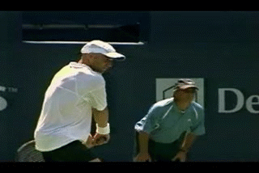
Even Agassi, the king of the vertical finish can turn the racket over at times in the followthrough.
So what does it all mean? In a future article we are going to look at the basic building blocks of the two-hander and the commonalities across the hitting arm positions. These elements include the unit turn, the stances, the rotational patterns, etc. But when it comes to extra arm rotation, I think it's a question of icing versus cake. Yes, increased use of the hands is a real factor in pro tennis, but it's important to understand it accurately, and to see it in the context of the whole stroke. When you have a solid basic pattern that is consistent and naturally powerful, that's the time to start experimenting with how to get a little more out of the shot by copying this element from the pros.

John Yandell is widely acknowledged as one of the leading videographers and students of the modern game of professional tennis. His high speed filming for Advanced Tennis and Tennisplayer have provided new visual resources that have changed the way the game is studied and understood by both players and coaches. He has done personal video analysis for hundreds of high level competitive players, including Justine Henin-Hardenne, Taylor Dent and John McEnroe, among others.
In addition to his role as Editor of Tennisplayer he is the author of the critically acclaimed book Visual Tennis. The John Yandell Tennis School is located in San Francisco, California.